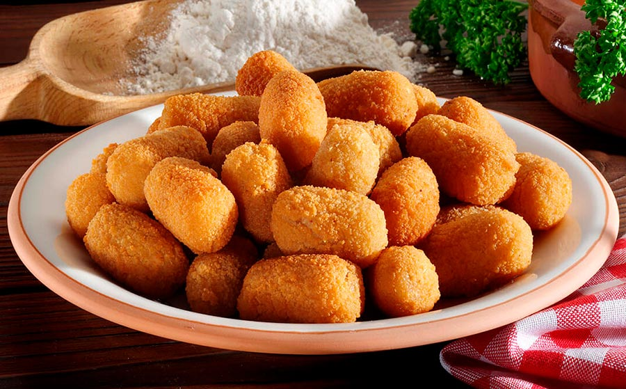

Croquetas Caseras de Jamón
Las croquetas más cremosas y deliciosas que has probado. Una receta clásica española que siempre triunfa en cualquier mesa.

Ingredientes necesarios
- 150 g de jamón serrano picado finamente
- 50 g de mantequilla
- 50 g de harina
- 500 ml de leche entera
- 2 huevos
- Pan rallado
- Sal y pimienta al gusto
- Nuez moscada
- Aceite para freír
Pasos a seguir
- Derrite la mantequilla en una sartén y echa la harina. Remueve constantemente durante 1 minuto para hacer un roux.
- Vierte la leche poco a poco sin dejar de remover para evitar grumos.
- Cocina a fuego medio-bajo durante 5 minutos removiendo constantemente hasta que la mezcla espese.
- Añade el jamón picado, sal, pimienta y una pizca de nuez moscada. Mezcla bien.
- Vierte la mezcla en una bandeja y deja enfriar completamente (mínimo 2 horas refrigerado).
- Forma las croquetas con las manos mojadas, dándoles forma alargada.
- Prepara tres platos: uno con harina, otro con huevo batido y otro con pan rallado.
- Pasa cada croqueta por harina, luego huevo, y finalmente pan rallado.
- Fríe en aceite caliente (170°C) hasta que doren por todos los lados.
- Sirve calientes acompañadas de una salsa picante.